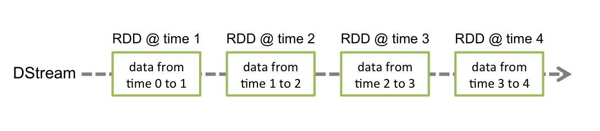
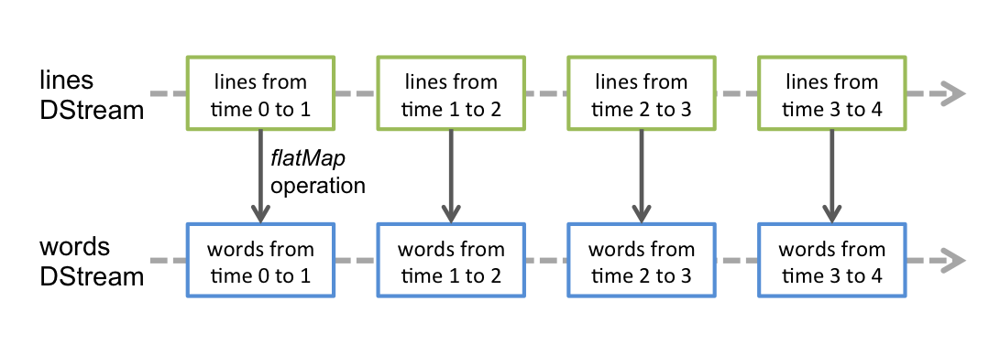
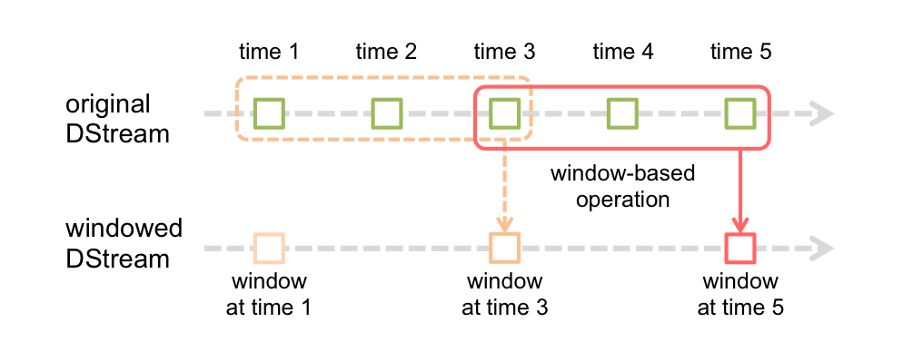

Spark Streaming is an extension of the core Spark API that enables scalable, high-throughput,
fault-tolerant stream processing of live data streams. Data can be ingested from many sources
like Kafka, Flume, Twitter, ZeroMQ, Kinesis or TCP sockets can be processed using complex
algorithms expressed with high-level functions like map, reduce, join and window.
Finally, processed data can be pushed out to filesystems, databases,
and live dashboards. In fact, you can apply Spark’s
machine learning and
graph processing algorithms on data streams.
Internally, it works as follows. Spark Streaming receives live input data streams and divides the data into batches, which are then processed by the Spark engine to generate the final stream of results in batches.

Spark Streaming provides a high-level abstraction called discretized stream or DStream, which represents a continuous stream of data. DStreams can be created either from input data streams from sources such as Kafka, Flume, and Kinesis, or by applying high-level operations on other DStreams. Internally, a DStream is represented as a sequence of RDDs.
This guide shows you how to start writing Spark Streaming programs with DStreams. You can write Spark Streaming programs in Scala, Java or Python (introduced in Spark 1.2), all of which are presented in this guide. You will find tabs throughout this guide that let you choose between code snippets of different languages.
Note: Python API for Spark Streaming has been introduced in Spark 1.2. It has all the DStream transformations and almost all the output operations available in Scala and Java interfaces. However, it has only support for basic sources like text files and text data over sockets. APIs for additional sources, like Kafka and Flume, will be available in the future. Further information about available features in the Python API are mentioned throughout this document; look out for the tag Python API.
Before we go into the details of how to write your own Spark Streaming program, let’s take a quick look at what a simple Spark Streaming program looks like. Let’s say we want to count the number of words in text data received from a data server listening on a TCP socket. All you need to do is as follows.
First, we import the names of the Spark Streaming classes, and some implicit conversions from StreamingContext into our environment, to add useful methods to other classes we need (like DStream). StreamingContext is the main entry point for all streaming functionality. We create a local StreamingContext with two execution threads, and batch interval of 1 second.
import org.apache.spark._
import org.apache.spark.streaming._
import org.apache.spark.streaming.StreamingContext._ // not necessary in Spark 1.3+
// Create a local StreamingContext with two working thread and batch interval of 1 second.
// The master requires 2 cores to prevent from a starvation scenario.
val conf = new SparkConf().setMaster("local[2]").setAppName("NetworkWordCount")
val ssc = new StreamingContext(conf, Seconds(1))Using this context, we can create a DStream that represents streaming data from a TCP
source, specified as hostname (e.g. localhost) and port (e.g. 9999).
// Create a DStream that will connect to hostname:port, like localhost:9999
val lines = ssc.socketTextStream("localhost", 9999)This lines DStream represents the stream of data that will be received from the data
server. Each record in this DStream is a line of text. Next, we want to split the lines by
space into words.
// Split each line into words
val words = lines.flatMap(_.split(" "))flatMap is a one-to-many DStream operation that creates a new DStream by
generating multiple new records from each record in the source DStream. In this case,
each line will be split into multiple words and the stream of words is represented as the
words DStream. Next, we want to count these words.
import org.apache.spark.streaming.StreamingContext._ // not necessary in Spark 1.3+
// Count each word in each batch
val pairs = words.map(word => (word, 1))
val wordCounts = pairs.reduceByKey(_ + _)
// Print the first ten elements of each RDD generated in this DStream to the console
wordCounts.print()The words DStream is further mapped (one-to-one transformation) to a DStream of (word,
1) pairs, which is then reduced to get the frequency of words in each batch of data.
Finally, wordCounts.print() will print a few of the counts generated every second.
Note that when these lines are executed, Spark Streaming only sets up the computation it will perform when it is started, and no real processing has started yet. To start the processing after all the transformations have been setup, we finally call
ssc.start() // Start the computation
ssc.awaitTermination() // Wait for the computation to terminateThe complete code can be found in the Spark Streaming example
NetworkWordCount.
First, we create a JavaStreamingContext object, which is the main entry point for all streaming functionality. We create a local StreamingContext with two execution threads, and a batch interval of 1 second.
import org.apache.spark.*;
import org.apache.spark.api.java.function.*;
import org.apache.spark.streaming.*;
import org.apache.spark.streaming.api.java.*;
import scala.Tuple2;
// Create a local StreamingContext with two working thread and batch interval of 1 second
SparkConf conf = new SparkConf().setMaster("local[2]").setAppName("NetworkWordCount")
JavaStreamingContext jssc = new JavaStreamingContext(conf, Durations.seconds(1))Using this context, we can create a DStream that represents streaming data from a TCP
source, specified as hostname (e.g. localhost) and port (e.g. 9999).
// Create a DStream that will connect to hostname:port, like localhost:9999
JavaReceiverInputDStream<String> lines = jssc.socketTextStream("localhost", 9999);This lines DStream represents the stream of data that will be received from the data
server. Each record in this stream is a line of text. Then, we want to split the the lines by
space into words.
// Split each line into words
JavaDStream<String> words = lines.flatMap(
new FlatMapFunction<String, String>() {
@Override public Iterable<String> call(String x) {
return Arrays.asList(x.split(" "));
}
});flatMap is a DStream operation that creates a new DStream by
generating multiple new records from each record in the source DStream. In this case,
each line will be split into multiple words and the stream of words is represented as the
words DStream. Note that we defined the transformation using a
FlatMapFunction object.
As we will discover along the way, there are a number of such convenience classes in the Java API
that help define DStream transformations.
Next, we want to count these words.
// Count each word in each batch
JavaPairDStream<String, Integer> pairs = words.mapToPair(
new PairFunction<String, String, Integer>() {
@Override public Tuple2<String, Integer> call(String s) {
return new Tuple2<String, Integer>(s, 1);
}
});
JavaPairDStream<String, Integer> wordCounts = pairs.reduceByKey(
new Function2<Integer, Integer, Integer>() {
@Override public Integer call(Integer i1, Integer i2) {
return i1 + i2;
}
});
// Print the first ten elements of each RDD generated in this DStream to the console
wordCounts.print();The words DStream is further mapped (one-to-one transformation) to a DStream of (word,
1) pairs, using a PairFunction
object. Then, it is reduced to get the frequency of words in each batch of data,
using a Function2 object.
Finally, wordCounts.print() will print a few of the counts generated every second.
Note that when these lines are executed, Spark Streaming only sets up the computation it
will perform after it is started, and no real processing has started yet. To start the processing
after all the transformations have been setup, we finally call start method.
jssc.start(); // Start the computation
jssc.awaitTermination(); // Wait for the computation to terminateThe complete code can be found in the Spark Streaming example
JavaNetworkWordCount.
First, we import StreamingContext, which is the main entry point for all streaming functionality. We create a local StreamingContext with two execution threads, and batch interval of 1 second.
from pyspark import SparkContext
from pyspark.streaming import StreamingContext
# Create a local StreamingContext with two working thread and batch interval of 1 second
sc = SparkContext("local[2]", "NetworkWordCount")
ssc = StreamingContext(sc, 1)Using this context, we can create a DStream that represents streaming data from a TCP
source, specified as hostname (e.g. localhost) and port (e.g. 9999).
# Create a DStream that will connect to hostname:port, like localhost:9999
lines = ssc.socketTextStream("localhost", 9999)This lines DStream represents the stream of data that will be received from the data
server. Each record in this DStream is a line of text. Next, we want to split the lines by
space into words.
# Split each line into words
words = lines.flatMap(lambda line: line.split(" "))flatMap is a one-to-many DStream operation that creates a new DStream by
generating multiple new records from each record in the source DStream. In this case,
each line will be split into multiple words and the stream of words is represented as the
words DStream. Next, we want to count these words.
# Count each word in each batch
pairs = words.map(lambda word: (word, 1))
wordCounts = pairs.reduceByKey(lambda x, y: x + y)
# Print the first ten elements of each RDD generated in this DStream to the console
wordCounts.pprint()The words DStream is further mapped (one-to-one transformation) to a DStream of (word,
1) pairs, which is then reduced to get the frequency of words in each batch of data.
Finally, wordCounts.pprint() will print a few of the counts generated every second.
Note that when these lines are executed, Spark Streaming only sets up the computation it will perform when it is started, and no real processing has started yet. To start the processing after all the transformations have been setup, we finally call
ssc.start() # Start the computation
ssc.awaitTermination() # Wait for the computation to terminateThe complete code can be found in the Spark Streaming example
NetworkWordCount.
If you have already downloaded and built Spark, you can run this example as follows. You will first need to run Netcat (a small utility found in most Unix-like systems) as a data server by using
$ nc -lk 9999Then, in a different terminal, you can start the example by using
$ ./bin/run-example streaming.NetworkWordCount localhost 9999$ ./bin/run-example streaming.JavaNetworkWordCount localhost 9999$ ./bin/spark-submit examples/src/main/python/streaming/network_wordcount.py localhost 9999Then, any lines typed in the terminal running the netcat server will be counted and printed on screen every second. It will look something like the following.
|
|
Next, we move beyond the simple example and elaborate on the basics of Spark Streaming.
Similar to Spark, Spark Streaming is available through Maven Central. To write your own Spark Streaming program, you will have to add the following dependency to your SBT or Maven project.
<dependency>
<groupId>org.apache.spark</groupId>
<artifactId>spark-streaming_</artifactId>
<version></version>
</dependency>
libraryDependencies += "org.apache.spark" % "spark-streaming_" % ""
For ingesting data from sources like Kafka, Flume, and Kinesis that are not present in the Spark
Streaming core
API, you will have to add the corresponding
artifact spark-streaming-xyz_ to the dependencies. For example,
some of the common ones are as follows.
| Source | Artifact |
|---|---|
| Kafka | spark-streaming-kafka_ |
| Flume | spark-streaming-flume_ |
| Kinesis | spark-streaming-kinesis-asl_ [Amazon Software License] |
| spark-streaming-twitter_ | |
| ZeroMQ | spark-streaming-zeromq_ |
| MQTT | spark-streaming-mqtt_ |
For an up-to-date list, please refer to the Maven repository for the full list of supported sources and artifacts.
To initialize a Spark Streaming program, a StreamingContext object has to be created which is the main entry point of all Spark Streaming functionality.
A StreamingContext object can be created from a SparkConf object.
import org.apache.spark._
import org.apache.spark.streaming._
val conf = new SparkConf().setAppName(appName).setMaster(master)
val ssc = new StreamingContext(conf, Seconds(1))The appName parameter is a name for your application to show on the cluster UI.
master is a Spark, Mesos or YARN cluster URL,
or a special “local[*]” string to run in local mode. In practice, when running on a cluster,
you will not want to hardcode master in the program,
but rather launch the application with spark-submit and
receive it there. However, for local testing and unit tests, you can pass “local[*]” to run Spark Streaming
in-process (detects the number of cores in the local system). Note that this internally creates a SparkContext (starting point of all Spark functionality) which can be accessed as ssc.sparkContext.
The batch interval must be set based on the latency requirements of your application and available cluster resources. See the Performance Tuning section for more details.
A StreamingContext object can also be created from an existing SparkContext object.
import org.apache.spark.streaming._
val sc = ... // existing SparkContext
val ssc = new StreamingContext(sc, Seconds(1))A JavaStreamingContext object can be created from a SparkConf object.
import org.apache.spark.*;
import org.apache.spark.streaming.api.java.*;
SparkConf conf = new SparkConf().setAppName(appName).setMaster(master);
JavaStreamingContext ssc = new JavaStreamingContext(conf, Duration(1000));The appName parameter is a name for your application to show on the cluster UI.
master is a Spark, Mesos or YARN cluster URL,
or a special “local[*]” string to run in local mode. In practice, when running on a cluster,
you will not want to hardcode master in the program,
but rather launch the application with spark-submit and
receive it there. However, for local testing and unit tests, you can pass “local[*]” to run Spark Streaming
in-process. Note that this internally creates a JavaSparkContext (starting point of all Spark functionality) which can be accessed as ssc.sparkContext.
The batch interval must be set based on the latency requirements of your application and available cluster resources. See the Performance Tuning section for more details.
A JavaStreamingContext object can also be created from an existing JavaSparkContext.
import org.apache.spark.streaming.api.java.*;
JavaSparkContext sc = ... //existing JavaSparkContext
JavaStreamingContext ssc = new JavaStreamingContext(sc, Durations.seconds(1));A StreamingContext object can be created from a SparkContext object.
from pyspark import SparkContext
from pyspark.streaming import StreamingContext
sc = SparkContext(master, appName)
ssc = StreamingContext(sc, 1)The appName parameter is a name for your application to show on the cluster UI.
master is a Spark, Mesos or YARN cluster URL,
or a special “local[*]” string to run in local mode. In practice, when running on a cluster,
you will not want to hardcode master in the program,
but rather launch the application with spark-submit and
receive it there. However, for local testing and unit tests, you can pass “local[*]” to run Spark Streaming
in-process (detects the number of cores in the local system).
The batch interval must be set based on the latency requirements of your application and available cluster resources. See the Performance Tuning section for more details.
After a context is defined, you have to do the following.
streamingContext.start().streamingContext.awaitTermination().streamingContext.stop().stop() called stopSparkContext to false.Discretized Stream or DStream is the basic abstraction provided by Spark Streaming. It represents a continuous stream of data, either the input data stream received from source, or the processed data stream generated by transforming the input stream. Internally, a DStream is represented by a continuous series of RDDs, which is Spark’s abstraction of an immutable, distributed dataset (see Spark Programming Guide for more details). Each RDD in a DStream contains data from a certain interval, as shown in the following figure.

Any operation applied on a DStream translates to operations on the underlying RDDs. For example,
in the earlier example of converting a stream of lines to words,
the flatMap operation is applied on each RDD in the lines DStream to generate the RDDs of the
words DStream. This is shown in the following figure.

These underlying RDD transformations are computed by the Spark engine. The DStream operations hide most of these details and provide the developer with higher-level API for convenience. These operations are discussed in detail in later sections.
Input DStreams are DStreams representing the stream of input data received from streaming
sources. In the quick example, lines was an input DStream as it represented
the stream of data received from the netcat server. Every input DStream
(except file stream, discussed later in this section) is associated with a Receiver
(Scala doc,
Java doc) object which receives the
data from a source and stores it in Spark’s memory for processing.
Spark Streaming provides two categories of built-in streaming sources.
We are going to discuss some of the sources present in each category later in this section.
Note that, if you want to receive multiple streams of data in parallel in your streaming application, you can create multiple input DStreams (discussed further in the Performance Tuning section). This will create multiple receivers which will simultaneously receive multiple data streams. But note that Spark worker/executor as a long-running task, hence it occupies one of the cores allocated to the Spark Streaming application. Hence, it is important to remember that Spark Streaming application needs to be allocated enough cores (or threads, if running locally) to process the received data, as well as, to run the receiver(s).
When running a Spark Streaming program locally, do not use “local” or “local[1]” as the master URL. Either of these means that only one thread will be used for running tasks locally. If you are using a input DStream based on a receiver (e.g. sockets, Kafka, Flume, etc.), then the single thread will be used to run the receiver, leaving no thread for processing the received data. Hence, when running locally, always use “local[n]” as the master URL where n > number of receivers to run (see Spark Properties for information on how to set the master).
Extending the logic to running on a cluster, the number of cores allocated to the Spark Streaming application must be more than the number of receivers. Otherwise the system will receive data, but not be able to process them.
We have already taken a look at the ssc.socketTextStream(...) in the quick example
which creates a DStream from text
data received over a TCP socket connection. Besides sockets, the StreamingContext API provides
methods for creating DStreams from files and Akka actors as input sources.
File Streams: For reading data from files on any file system compatible with the HDFS API (that is, HDFS, S3, NFS, etc.), a DStream can be created as
streamingContext.fileStream[KeyClass, ValueClass, InputFormatClass](dataDirectory)
streamingContext.fileStream<KeyClass, ValueClass, InputFormatClass>(dataDirectory);
streamingContext.textFileStream(dataDirectory)
Spark Streaming will monitor the directory dataDirectory and process any files created in that directory (files written in nested directories not supported). Note that
dataDirectory by atomically moving or renaming them into
the data directory.For simple text files, there is an easier method streamingContext.textFileStream(dataDirectory). And file streams do not require running a receiver, hence does not require allocating cores.
Python API fileStream is not available in the Python API, only textFileStream is available.
Streams based on Custom Actors: DStreams can be created with data streams received through Akka
actors by using streamingContext.actorStream(actorProps, actor-name). See the Custom Receiver
Guide for more details.
Python API Since actors are available only in the Java and Scala
libraries, actorStream is not available in the Python API.
Queue of RDDs as a Stream: For testing a Spark Streaming application with test data, one can also create a DStream based on a queue of RDDs, using streamingContext.queueStream(queueOfRDDs). Each RDD pushed into the queue will be treated as a batch of data in the DStream, and processed like a stream.
For more details on streams from sockets, files, and actors, see the API documentations of the relevant functions in StreamingContext for Scala, JavaStreamingContext for Java, and StreamingContext for Python.
Python API As of Spark 1.3, out of these sources, only Kafka is available in the Python API. We will add more advanced sources in the Python API in future.
This category of sources require interfacing with external non-Spark libraries, some of them with complex dependencies (e.g., Kafka and Flume). Hence, to minimize issues related to version conflicts of dependencies, the functionality to create DStreams from these sources have been moved to separate libraries, that can be linked to explicitly when necessary. For example, if you want to create a DStream using data from Twitter’s stream of tweets, you have to do the following.
spark-streaming-twitter_ to the
SBT/Maven project dependencies.TwitterUtils class and create a DStream with
TwitterUtils.createStream as shown below.spark-streaming-twitter_ and its transitive dependencies) and
then deploy the application. This is further explained in the Deploying section.import org.apache.spark.streaming.twitter._
TwitterUtils.createStream(ssc, None)import org.apache.spark.streaming.twitter.*;
TwitterUtils.createStream(jssc);Note that these advanced sources are not available in the Spark shell, hence applications based on these advanced sources cannot be tested in the shell. If you really want to use them in the Spark shell you will have to download the corresponding Maven artifact’s JAR along with its dependencies and it in the classpath.
Some of these advanced sources are as follows.
Kafka: Spark Streaming is compatible with Kafka 0.8.1.1. See the Kafka Integration Guide for more details.
Flume: Spark Streaming is compatible with Flume 1.4.0. See the Flume Integration Guide for more details.
Kinesis: See the Kinesis Integration Guide for more details.
Twitter: Spark Streaming’s TwitterUtils uses Twitter4j 3.0.3 to get the public stream of tweets using Twitter’s Streaming API. Authentication information can be provided by any of the methods supported by Twitter4J library. You can either get the public stream, or get the filtered stream based on a keywords. See the API documentation (Scala, Java) and examples (TwitterPopularTags and TwitterAlgebirdCMS).
Python API This is not yet supported in Python.
Input DStreams can also be created out of custom data sources. All you have to do is implement an user-defined receiver (see next section to understand what that is) that can receive data from the custom sources and push it into Spark. See the Custom Receiver Guide for details.
There can be two kinds of data sources based on their reliability. Sources (like Kafka and Flume) allow the transferred data to be acknowledged. If the system receiving data from these reliable sources acknowledge the received data correctly, it can be ensured that no data gets lost due to any kind of failure. This leads to two kinds of receivers.
The details of how to write a reliable receiver are discussed in the Custom Receiver Guide.
Similar to that of RDDs, transformations allow the data from the input DStream to be modified. DStreams support many of the transformations available on normal Spark RDD’s. Some of the common ones are as follows.
| Transformation | Meaning |
|---|---|
| map(func) | Return a new DStream by passing each element of the source DStream through a function func. |
| flatMap(func) | Similar to map, but each input item can be mapped to 0 or more output items. |
| filter(func) | Return a new DStream by selecting only the records of the source DStream on which func returns true. |
| repartition(numPartitions) | Changes the level of parallelism in this DStream by creating more or fewer partitions. |
| union(otherStream) | Return a new DStream that contains the union of the elements in the source DStream and otherDStream. |
| count() | Return a new DStream of single-element RDDs by counting the number of elements in each RDD of the source DStream. |
| reduce(func) | Return a new DStream of single-element RDDs by aggregating the elements in each RDD of the source DStream using a function func (which takes two arguments and returns one). The function should be associative so that it can be computed in parallel. |
| countByValue() | When called on a DStream of elements of type K, return a new DStream of (K, Long) pairs where the value of each key is its frequency in each RDD of the source DStream. |
| reduceByKey(func, [numTasks]) | When called on a DStream of (K, V) pairs, return a new DStream of (K, V) pairs where the
values for each key are aggregated using the given reduce function. Note: By default,
this uses Spark's default number of parallel tasks (2 for local mode, and in cluster mode the number
is determined by the config property spark.default.parallelism) to do the grouping.
You can pass an optional numTasks argument to set a different number of tasks. |
| join(otherStream, [numTasks]) | When called on two DStreams of (K, V) and (K, W) pairs, return a new DStream of (K, (V, W)) pairs with all pairs of elements for each key. |
| cogroup(otherStream, [numTasks]) | When called on DStream of (K, V) and (K, W) pairs, return a new DStream of (K, Seq[V], Seq[W]) tuples. |
| transform(func) | Return a new DStream by applying a RDD-to-RDD function to every RDD of the source DStream. This can be used to do arbitrary RDD operations on the DStream. |
| updateStateByKey(func) | Return a new "state" DStream where the state for each key is updated by applying the given function on the previous state of the key and the new values for the key. This can be used to maintain arbitrary state data for each key. |
A few of these transformations are worth discussing in more detail.
The updateStateByKey operation allows you to maintain arbitrary state while continuously updating
it with new information. To use this, you will have to do two steps.
Let’s illustrate this with an example. Say you want to maintain a running count of each word seen in a text data stream. Here, the running count is the state and it is an integer. We define the update function as
def updateFunction(newValues: Seq[Int], runningCount: Option[Int]): Option[Int] = {
val newCount = ... // add the new values with the previous running count to get the new count
Some(newCount)
}This is applied on a DStream containing words (say, the pairs DStream containing (word,
1) pairs in the earlier example).
val runningCounts = pairs.updateStateByKey[Int](updateFunction _)The update function will be called for each word, with newValues having a sequence of 1’s (from
the (word, 1) pairs) and the runningCount having the previous count. For the complete
Scala code, take a look at the example
StatefulNetworkWordCount.scala.
import com.google.common.base.Optional;
Function2<List<Integer>, Optional<Integer>, Optional<Integer>> updateFunction =
new Function2<List<Integer>, Optional<Integer>, Optional<Integer>>() {
@Override public Optional<Integer> call(List<Integer> values, Optional<Integer> state) {
Integer newSum = ... // add the new values with the previous running count to get the new count
return Optional.of(newSum);
}
};This is applied on a DStream containing words (say, the pairs DStream containing (word,
1) pairs in the quick example).
JavaPairDStream<String, Integer> runningCounts = pairs.updateStateByKey(updateFunction);The update function will be called for each word, with newValues having a sequence of 1’s (from
the (word, 1) pairs) and the runningCount having the previous count. For the complete
Java code, take a look at the example
JavaStatefulNetworkWordCount.java.
def updateFunction(newValues, runningCount):
if runningCount is None:
runningCount = 0
return sum(newValues, runningCount) # add the new values with the previous running count to get the new countThis is applied on a DStream containing words (say, the pairs DStream containing (word,
1) pairs in the earlier example).
runningCounts = pairs.updateStateByKey(updateFunction)The update function will be called for each word, with newValues having a sequence of 1’s (from
the (word, 1) pairs) and the runningCount having the previous count. For the complete
Python code, take a look at the example
stateful_network_wordcount.py.
Note that using updateStateByKey requires the checkpoint directory to be configured, which is
discussed in detail in the checkpointing section.
The transform operation (along with its variations like transformWith) allows
arbitrary RDD-to-RDD functions to be applied on a DStream. It can be used to apply any RDD
operation that is not exposed in the DStream API.
For example, the functionality of joining every batch in a data stream
with another dataset is not directly exposed in the DStream API. However,
you can easily use transform to do this. This enables very powerful possibilities. For example,
if you want to do real-time data cleaning by joining the input data stream with precomputed
spam information (maybe generated with Spark as well) and then filtering based on it.
val spamInfoRDD = ssc.sparkContext.newAPIHadoopRDD(...) // RDD containing spam information
val cleanedDStream = wordCounts.transform(rdd => {
rdd.join(spamInfoRDD).filter(...) // join data stream with spam information to do data cleaning
...
})import org.apache.spark.streaming.api.java.*;
// RDD containing spam information
final JavaPairRDD<String, Double> spamInfoRDD = jssc.sparkContext().newAPIHadoopRDD(...);
JavaPairDStream<String, Integer> cleanedDStream = wordCounts.transform(
new Function<JavaPairRDD<String, Integer>, JavaPairRDD<String, Integer>>() {
@Override public JavaPairRDD<String, Integer> call(JavaPairRDD<String, Integer> rdd) throws Exception {
rdd.join(spamInfoRDD).filter(...); // join data stream with spam information to do data cleaning
...
}
});spamInfoRDD = sc.pickleFile(...) # RDD containing spam information
# join data stream with spam information to do data cleaning
cleanedDStream = wordCounts.transform(lambda rdd: rdd.join(spamInfoRDD).filter(...))In fact, you can also use machine learning and
graph computation algorithms in the transform method.
Spark Streaming also provides windowed computations, which allow you to apply transformations over a sliding window of data. This following figure illustrates this sliding window.

As shown in the figure, every time the window slides over a source DStream, the source RDDs that fall within the window are combined and operated upon to produce the RDDs of the windowed DStream. In this specific case, the operation is applied over last 3 time units of data, and slides by 2 time units. This shows that any window operation needs to specify two parameters.
These two parameters must be multiples of the batch interval of the source DStream (1 in the figure).
Let’s illustrate the window operations with an example. Say, you want to extend the
earlier example by generating word counts over last 30 seconds of data,
every 10 seconds. To do this, we have to apply the reduceByKey operation on the pairs DStream of
(word, 1) pairs over the last 30 seconds of data. This is done using the
operation reduceByKeyAndWindow.
// Reduce last 30 seconds of data, every 10 seconds
val windowedWordCounts = pairs.reduceByKeyAndWindow((a:Int,b:Int) => (a + b), Seconds(30), Seconds(10))// Reduce function adding two integers, defined separately for clarity
Function2<Integer, Integer, Integer> reduceFunc = new Function2<Integer, Integer, Integer>() {
@Override public Integer call(Integer i1, Integer i2) {
return i1 + i2;
}
};
// Reduce last 30 seconds of data, every 10 seconds
JavaPairDStream<String, Integer> windowedWordCounts = pairs.reduceByKeyAndWindow(reduceFunc, Durations.seconds(30), Durations.seconds(10));# Reduce last 30 seconds of data, every 10 seconds
windowedWordCounts = pairs.reduceByKeyAndWindow(lambda x, y: x + y, lambda x, y: x - y, 30, 10)Some of the common window operations are as follows. All of these operations take the said two parameters - windowLength and slideInterval.
| Transformation | Meaning |
|---|---|
| window(windowLength, slideInterval) | Return a new DStream which is computed based on windowed batches of the source DStream. |
| countByWindow(windowLength, slideInterval) | Return a sliding window count of elements in the stream. |
| reduceByWindow(func, windowLength, slideInterval) | Return a new single-element stream, created by aggregating elements in the stream over a sliding interval using func. The function should be associative so that it can be computed correctly in parallel. |
| reduceByKeyAndWindow(func, windowLength, slideInterval, [numTasks]) | When called on a DStream of (K, V) pairs, returns a new DStream of (K, V)
pairs where the values for each key are aggregated using the given reduce function func
over batches in a sliding window. Note: By default, this uses Spark's default number of
parallel tasks (2 for local mode, and in cluster mode the number is determined by the config
property spark.default.parallelism) to do the grouping. You can pass an optional
numTasks argument to set a different number of tasks.
|
| reduceByKeyAndWindow(func, invFunc, windowLength, slideInterval, [numTasks]) | A more efficient version of the above reduceByKeyAndWindow() where the reduce
value of each window is calculated incrementally using the reduce values of the previous window.
This is done by reducing the new data that enter the sliding window, and "inverse reducing" the
old data that leave the window. An example would be that of "adding" and "subtracting" counts
of keys as the window slides. However, it is applicable to only "invertible reduce functions",
that is, those reduce functions which have a corresponding "inverse reduce" function (taken as
parameter invFunc. Like in reduceByKeyAndWindow, the number of reduce tasks
is configurable through an optional argument. Note that [checkpointing](#checkpointing) must be
enabled for using this operation.
|
| countByValueAndWindow(windowLength, slideInterval, [numTasks]) | When called on a DStream of (K, V) pairs, returns a new DStream of (K, Long) pairs where the
value of each key is its frequency within a sliding window. Like in
reduceByKeyAndWindow, the number of reduce tasks is configurable through an
optional argument.
|
Finally, its worth highlighting how easily you can perform different kinds of joins in Spark Streaming.
Streams can be very easily joined with other streams.
val stream1: DStream[String, String] = ...
val stream2: DStream[String, String] = ...
val joinedStream = stream1.join(stream2)JavaPairDStream<String, String> stream1 = ...
JavaPairDStream<String, String> stream2 = ...
JavaPairDStream<String, String> joinedStream = stream1.join(stream2);stream1 = ...
stream2 = ...
joinedStream = stream1.join(stream2)Here, in each batch interval, the RDD generated by stream1 will be joined with the RDD generated by stream2. You can also do leftOuterJoin, rightOuterJoin, fullOuterJoin. Furthermore, it is often very useful to do joins over windows of the streams. That is pretty easy as well.
val windowedStream1 = stream1.window(Seconds(20))
val windowedStream2 = stream2.window(Minutes(1))
val joinedStream = windowedStream1.join(windowedStream2)JavaPairDStream<String, String> windowedStream1 = stream1.window(Durations.seconds(20));
JavaPairDStream<String, String> windowedStream2 = stream2.window(Durations.minutes(1));
JavaPairDStream<String, String> joinedStream = windowedStream1.join(windowedStream2);windowedStream1 = stream1.window(20)
windowedStream2 = stream2.window(60)
joinedStream = windowedStream1.join(windowedStream2)This has already been shown earlier while explain DStream.transform operation. Here is yet another example of joining a windowed stream with a dataset.
val dataset: RDD[String, String] = ...
val windowedStream = stream.window(Seconds(20))...
val joinedStream = windowedStream.transform { rdd => rdd.join(dataset) }JavaPairRDD<String, String> dataset = ...
JavaPairDStream<String, String> windowedStream = stream.window(Durations.seconds(20));
JavaPairDStream<String, String> joinedStream = windowedStream.transform(
new Function<JavaRDD<Tuple2<String, String>>, JavaRDD<Tuple2<String, String>>>() {
@Override
public JavaRDD<Tuple2<String, String>> call(JavaRDD<Tuple2<String, String>> rdd) {
return rdd.join(dataset);
}
}
);dataset = ... # some RDD
windowedStream = stream.window(20)
joinedStream = windowedStream.transform(lambda rdd: rdd.join(dataset))In fact, you can also dynamically change the dataset you want to join against. The function provided to transform is evaluated every batch interval and therefore will use the current dataset that dataset reference points to.
The complete list of DStream transformations is available in the API documentation. For the Scala API, see DStream and PairDStreamFunctions. For the Java API, see JavaDStream and JavaPairDStream. For the Python API, see DStream.
Output operations allow DStream’s data to be pushed out external systems like a database or a file systems. Since the output operations actually allow the transformed data to be consumed by external systems, they trigger the actual execution of all the DStream transformations (similar to actions for RDDs). Currently, the following output operations are defined:
| Output Operation | Meaning |
|---|---|
| print() | Prints first ten elements of every batch of data in a DStream on the driver node running
the streaming application. This is useful for development and debugging.
Python API This is called pprint() in the Python API. |
| saveAsTextFiles(prefix, [suffix]) | Save this DStream's contents as a text files. The file name at each batch interval is generated based on prefix and suffix: "prefix-TIME_IN_MS[.suffix]". |
| saveAsObjectFiles(prefix, [suffix]) | Save this DStream's contents as a SequenceFile of serialized Java objects. The file
name at each batch interval is generated based on prefix and
suffix: "prefix-TIME_IN_MS[.suffix]".
Python API This is not available in the Python API. |
| saveAsHadoopFiles(prefix, [suffix]) | Save this DStream's contents as a Hadoop file. The file name at each batch interval is
generated based on prefix and suffix: "prefix-TIME_IN_MS[.suffix]".
Python API This is not available in the Python API. |
| foreachRDD(func) | The most generic output operator that applies a function, func, to each RDD generated from the stream. This function should push the data in each RDD to a external system, like saving the RDD to files, or writing it over the network to a database. Note that the function func is executed in the driver process running the streaming application, and will usually have RDD actions in it that will force the computation of the streaming RDDs. |
dstream.foreachRDD is a powerful primitive that allows data to sent out to external systems.
However, it is important to understand how to use this primitive correctly and efficiently.
Some of the common mistakes to avoid are as follows.
Often writing data to external system requires creating a connection object (e.g. TCP connection to a remote server) and using it to send data to a remote system. For this purpose, a developer may inadvertently try creating a connection object at the Spark driver, but try to use it in a Spark worker to save records in the RDDs. For example (in Scala),
dstream.foreachRDD { rdd =>
val connection = createNewConnection() // executed at the driver
rdd.foreach { record =>
connection.send(record) // executed at the worker
}
}def sendRecord(rdd):
connection = createNewConnection() # executed at the driver
rdd.foreach(lambda record: connection.send(record))
connection.close()
dstream.foreachRDD(sendRecord)This is incorrect as this requires the connection object to be serialized and sent from the driver to the worker. Such connection objects are rarely transferrable across machines. This error may manifest as serialization errors (connection object not serializable), initialization errors (connection object needs to be initialized at the workers), etc. The correct solution is to create the connection object at the worker.
However, this can lead to another common mistake - creating a new connection for every record. For example,
dstream.foreachRDD { rdd =>
rdd.foreach { record =>
val connection = createNewConnection()
connection.send(record)
connection.close()
}
}def sendRecord(record):
connection = createNewConnection()
connection.send(record)
connection.close()
dstream.foreachRDD(lambda rdd: rdd.foreach(sendRecord))Typically, creating a connection object has time and resource overheads. Therefore, creating and
destroying a connection object for each record can incur unnecessarily high overheads and can
significantly reduce the overall throughput of the system. A better solution is to use
rdd.foreachPartition - create a single connection object and send all the records in a RDD
partition using that connection.
dstream.foreachRDD { rdd =>
rdd.foreachPartition { partitionOfRecords =>
val connection = createNewConnection()
partitionOfRecords.foreach(record => connection.send(record))
connection.close()
}
}def sendPartition(iter):
connection = createNewConnection()
for record in iter:
connection.send(record)
connection.close()
dstream.foreachRDD(lambda rdd: rdd.foreachPartition(sendPartition))This amortizes the connection creation overheads over many records.
Finally, this can be further optimized by reusing connection objects across multiple RDDs/batches. One can maintain a static pool of connection objects than can be reused as RDDs of multiple batches are pushed to the external system, thus further reducing the overheads.
dstream.foreachRDD { rdd =>
rdd.foreachPartition { partitionOfRecords =>
// ConnectionPool is a static, lazily initialized pool of connections
val connection = ConnectionPool.getConnection()
partitionOfRecords.foreach(record => connection.send(record))
ConnectionPool.returnConnection(connection) // return to the pool for future reuse
}
}def sendPartition(iter):
# ConnectionPool is a static, lazily initialized pool of connections
connection = ConnectionPool.getConnection()
for record in iter:
connection.send(record)
# return to the pool for future reuse
ConnectionPool.returnConnection(connection)
dstream.foreachRDD(lambda rdd: rdd.foreachPartition(sendPartition))Note that the connections in the pool should be lazily created on demand and timed out if not used for a while. This achieves the most efficient sending of data to external systems.
DStreams are executed lazily by the output operations, just like RDDs are lazily executed by RDD actions. Specifically, RDD actions inside the DStream output operations force the processing of the received data. Hence, if your application does not have any output operation, or has output operations like dstream.foreachRDD() without any RDD action inside them, then nothing will get executed. The system will simply receive the data and discard it.
By default, output operations are executed one-at-a-time. And they are executed in the order they are defined in the application.
You can easily use DataFrames and SQL operations on streaming data. You have to create a SQLContext using the SparkContext that the StreamingContext is using. Furthermore this has to done such that it can be restarted on driver failures. This is done by creating a lazily instantiated singleton instance of SQLContext. This is shown in the following example. It modifies the earlier word count example to generate word counts using DataFrames and SQL. Each RDD is converted to a DataFrame, registered as a temporary table and then queried using SQL.
/** Lazily instantiated singleton instance of SQLContext */
object SQLContextSingleton {
@transient private var instance: SQLContext = null
// Instantiate SQLContext on demand
def getInstance(sparkContext: SparkContext): SQLContext = synchronized {
if (instance == null) {
instance = new SQLContext(sparkContext)
}
instance
}
}
...
/** Case class for converting RDD to DataFrame */
case class Row(word: String)
...
/** DataFrame operations inside your streaming program */
val words: DStream[String] = ...
words.foreachRDD { rdd =>
// Get the singleton instance of SQLContext
val sqlContext = SQLContextSingleton.getInstance(rdd.sparkContext)
import sqlContext.implicits._
// Convert RDD[String] to RDD[case class] to DataFrame
val wordsDataFrame = rdd.map(w => Row(w)).toDF()
// Register as table
wordsDataFrame.registerTempTable("words")
// Do word count on DataFrame using SQL and print it
val wordCountsDataFrame =
sqlContext.sql("select word, count(*) as total from words group by word")
wordCountsDataFrame.show()
}See the full source code.
/** Lazily instantiated singleton instance of SQLContext */
class JavaSQLContextSingleton {
static private transient SQLContext instance = null;
static public SQLContext getInstance(SparkContext sparkContext) {
if (instance == null) {
instance = new SQLContext(sparkContext);
}
return instance;
}
}
...
/** Java Bean class for converting RDD to DataFrame */
public class JavaRow implements java.io.Serializable {
private String word;
public String getWord() {
return word;
}
public void setWord(String word) {
this.word = word;
}
}
...
/** DataFrame operations inside your streaming program */
JavaDStream<String> words = ...
words.foreachRDD(
new Function2<JavaRDD<String>, Time, Void>() {
@Override
public Void call(JavaRDD<String> rdd, Time time) {
SQLContext sqlContext = JavaSQLContextSingleton.getInstance(rdd.context());
// Convert RDD[String] to RDD[case class] to DataFrame
JavaRDD<JavaRow> rowRDD = rdd.map(new Function<String, JavaRow>() {
public JavaRow call(String word) {
JavaRow record = new JavaRow();
record.setWord(word);
return record;
}
});
DataFrame wordsDataFrame = sqlContext.createDataFrame(rowRDD, JavaRow.class);
// Register as table
wordsDataFrame.registerTempTable("words");
// Do word count on table using SQL and print it
DataFrame wordCountsDataFrame =
sqlContext.sql("select word, count(*) as total from words group by word");
wordCountsDataFrame.show();
return null;
}
}
);See the full source code.
# Lazily instantiated global instance of SQLContext
def getSqlContextInstance(sparkContext):
if ('sqlContextSingletonInstance' not in globals()):
globals()['sqlContextSingletonInstance'] = SQLContext(sparkContext)
return globals()['sqlContextSingletonInstance']
...
# DataFrame operations inside your streaming program
words = ... # DStream of strings
def process(time, rdd):
print "========= %s =========" % str(time)
try:
# Get the singleton instance of SQLContext
sqlContext = getSqlContextInstance(rdd.context)
# Convert RDD[String] to RDD[Row] to DataFrame
rowRdd = rdd.map(lambda w: Row(word=w))
wordsDataFrame = sqlContext.createDataFrame(rowRdd)
# Register as table
wordsDataFrame.registerTempTable("words")
# Do word count on table using SQL and print it
wordCountsDataFrame = sqlContext.sql("select word, count(*) as total from words group by word")
wordCountsDataFrame.show()
except:
pass
words.foreachRDD(process)See the full source code.
You can also run SQL queries on tables defined on streaming data from a different thread (that is, asynchronous to the running StreamingContext). Just make sure that you set the StreamingContext to remember sufficient amount of streaming data such that query can run. Otherwise the StreamingContext, which is unaware of the any asynchronous SQL queries, will delete off old streaming data before the query can complete. For example, if you want to query the last batch, but your query can take 5 minutes to run, then call streamingContext.remember(Minutes(5)) (in Scala, or equivalent in other languages).
See the DataFrames and SQL guide to learn more about DataFrames.
You can also easily use machine learning algorithms provided by MLlib. First of all, there are streaming machine learning algorithms (e.g. Streaming Linear Regression, Streaming KMeans, etc.) which can simultaneously learn from the streaming data as well as apply the model on the streaming data. Beyond these, for a much larger class of machine learning algorithms, you can learn a learning model offline (i.e. using historical data) and then apply the model online on streaming data. See the MLlib guide for more details.
Similar to RDDs, DStreams also allow developers to persist the stream’s data in memory. That is,
using persist() method on a DStream will automatically persist every RDD of that DStream in
memory. This is useful if the data in the DStream will be computed multiple times (e.g., multiple
operations on the same data). For window-based operations like reduceByWindow and
reduceByKeyAndWindow and state-based operations like updateStateByKey, this is implicitly true.
Hence, DStreams generated by window-based operations are automatically persisted in memory, without
the developer calling persist().
For input streams that receive data over the network (such as, Kafka, Flume, sockets, etc.), the default persistence level is set to replicate the data to two nodes for fault-tolerance.
Note that, unlike RDDs, the default persistence level of DStreams keeps the data serialized in memory. This is further discussed in the Performance Tuning section. More information on different persistence levels can be found in Spark Programming Guide.
A streaming application must operate 24/7 and hence must be resilient to failures unrelated to the application logic (e.g., system failures, JVM crashes, etc.). For this to be possible, Spark Streaming needs to checkpoints enough information to a fault- tolerant storage system such that it can recover from failures. There are two types of data that are checkpointed.
To summarize, metadata checkpointing is primarily needed for recovery from driver failures, whereas data or RDD checkpointing is necessary even for basic functioning if stateful transformations are used.
Checkpointing must be enabled for applications with any of the following requirements:
updateStateByKey or reduceByKeyAndWindow (with
inverse function) is used in the application, then the checkpoint directory must be provided for
allowing periodic RDD checkpointing.Note that simple streaming applications without the aforementioned stateful transformations can be run without enabling checkpointing. The recovery from driver failures will also be partial in that case (some received but unprocessed data may be lost). This is often acceptable and many run Spark Streaming applications in this way. Support for non-Hadoop environments is expected to improve in the future.
Checkpointing can be enabled by setting a directory in a fault-tolerant,
reliable file system (e.g., HDFS, S3, etc.) to which the checkpoint information will be saved.
This is done by using streamingContext.checkpoint(checkpointDirectory). This will allow you to
use the aforementioned stateful transformations. Additionally,
if you want make the application recover from driver failures, you should rewrite your
streaming application to have the following behavior.
This behavior is made simple by using StreamingContext.getOrCreate. This is used as follows.
// Function to create and setup a new StreamingContext
def functionToCreateContext(): StreamingContext = {
val ssc = new StreamingContext(...) // new context
val lines = ssc.socketTextStream(...) // create DStreams
...
ssc.checkpoint(checkpointDirectory) // set checkpoint directory
ssc
}
// Get StreamingContext from checkpoint data or create a new one
val context = StreamingContext.getOrCreate(checkpointDirectory, functionToCreateContext _)
// Do additional setup on context that needs to be done,
// irrespective of whether it is being started or restarted
context. ...
// Start the context
context.start()
context.awaitTermination()If the checkpointDirectory exists, then the context will be recreated from the checkpoint data.
If the directory does not exist (i.e., running for the first time),
then the function functionToCreateContext will be called to create a new
context and set up the DStreams. See the Scala example
RecoverableNetworkWordCount.
This example appends the word counts of network data into a file.
This behavior is made simple by using JavaStreamingContext.getOrCreate. This is used as follows.
// Create a factory object that can create a and setup a new JavaStreamingContext
JavaStreamingContextFactory contextFactory = new JavaStreamingContextFactory() {
@Override public JavaStreamingContext create() {
JavaStreamingContext jssc = new JavaStreamingContext(...); // new context
JavaDStream<String> lines = jssc.socketTextStream(...); // create DStreams
...
jssc.checkpoint(checkpointDirectory); // set checkpoint directory
return jssc;
}
};
// Get JavaStreamingContext from checkpoint data or create a new one
JavaStreamingContext context = JavaStreamingContext.getOrCreate(checkpointDirectory, contextFactory);
// Do additional setup on context that needs to be done,
// irrespective of whether it is being started or restarted
context. ...
// Start the context
context.start();
context.awaitTermination();If the checkpointDirectory exists, then the context will be recreated from the checkpoint data.
If the directory does not exist (i.e., running for the first time),
then the function contextFactory will be called to create a new
context and set up the DStreams. See the Scala example
JavaRecoverableNetworkWordCount.
This example appends the word counts of network data into a file.
This behavior is made simple by using StreamingContext.getOrCreate. This is used as follows.
# Function to create and setup a new StreamingContext
def functionToCreateContext():
sc = SparkContext(...) # new context
ssc = new StreamingContext(...)
lines = ssc.socketTextStream(...) # create DStreams
...
ssc.checkpoint(checkpointDirectory) # set checkpoint directory
return ssc
# Get StreamingContext from checkpoint data or create a new one
context = StreamingContext.getOrCreate(checkpointDirectory, functionToCreateContext)
# Do additional setup on context that needs to be done,
# irrespective of whether it is being started or restarted
context. ...
# Start the context
context.start()
context.awaitTermination()If the checkpointDirectory exists, then the context will be recreated from the checkpoint data.
If the directory does not exist (i.e., running for the first time),
then the function functionToCreateContext will be called to create a new
context and set up the DStreams. See the Python example
recoverable_network_wordcount.py.
This example appends the word counts of network data into a file.
You can also explicitly create a StreamingContext from the checkpoint data and start the
computation by using StreamingContext.getOrCreate(checkpointDirectory, None).
In addition to using getOrCreate one also needs to ensure that the driver process gets
restarted automatically on failure. This can only be done by the deployment infrastructure that is
used to run the application. This is further discussed in the
Deployment section.
Note that checkpointing of RDDs incurs the cost of saving to reliable storage.
This may cause an increase in the processing time of those batches where RDDs get checkpointed.
Hence, the interval of
checkpointing needs to be set carefully. At small batch sizes (say 1 second), checkpointing every
batch may significantly reduce operation throughput. Conversely, checkpointing too infrequently
causes the lineage and task sizes to grow which may have detrimental effects. For stateful
transformations that require RDD checkpointing, the default interval is a multiple of the
batch interval that is at least 10 seconds. It can be set by using
dstream.checkpoint(checkpointInterval). Typically, a checkpoint interval of 5 - 10 times of
sliding interval of a DStream is good setting to try.
This section discusses the steps to deploy a Spark Streaming application.
To run a Spark Streaming applications, you need to have the following.
Cluster with a cluster manager - This is the general requirement of any Spark application, and discussed in detail in the deployment guide.
Package the application JAR - You have to compile your streaming application into a JAR.
If you are using spark-submit to start the
application, then you will not need to provide Spark and Spark Streaming in the JAR. However,
if your application uses advanced sources (e.g. Kafka, Flume, Twitter),
then you will have to package the extra artifact they link to, along with their dependencies,
in the JAR that is used to deploy the application. For example, an application using TwitterUtils
will have to include spark-streaming-twitter_ and all its
transitive dependencies in the application JAR.
Configuring sufficient memory for the executors - Since the received data must be stored in memory, the executors must be configured with sufficient memory to hold the received data. Note that if you are doing 10 minute window operations, the system has to keep at least last 10 minutes of data in memory. So the memory requirements for the application depends on the operations used in it.
Configuring checkpointing - If the stream application requires it, then a directory in the Hadoop API compatible fault-tolerant storage (e.g. HDFS, S3, etc.) must be configured as the checkpoint directory and the streaming application written in a way that checkpoint information can be used for failure recovery. See the checkpointing section for more details.
spark.streaming.receiver.writeAheadLog.enable to true. However, these stronger semantics may
come at the cost of the receiving throughput of individual receivers. This can be corrected by
running more receivers in parallel
to increase aggregate throughput. Additionally, it is recommended that the replication of the
received data within Spark be disabled when the write ahead log is enabled as the log is already
stored in a replicated storage system. This can be done by setting the storage level for the
input stream to StorageLevel.MEMORY_AND_DISK_SER.If a running Spark Streaming application needs to be upgraded with new application code, then there are two possible mechanism.
The upgraded Spark Streaming application is started and run in parallel to the existing application. Once the new one (receiving the same data as the old one) has been warmed up and ready for prime time, the old one be can be brought down. Note that this can be done for data sources that support sending the data to two destinations (i.e., the earlier and upgraded applications).
The existing application is shutdown gracefully (see
StreamingContext.stop(...)
or JavaStreamingContext.stop(...)
for graceful shutdown options) which ensure data that have been received is completely
processed before shutdown. Then the
upgraded application can be started, which will start processing from the same point where the earlier
application left off. Note that this can be done only with input sources that support source-side buffering
(like Kafka, and Flume) as data needs to be buffered while the previous application was down and
the upgraded application is not yet up. And restarting from earlier checkpoint
information of pre-upgrade code cannot be done. The checkpoint information essentially
contains serialized Scala/Java/Python objects and trying to deserialize objects with new,
modified classes may lead to errors. In this case, either start the upgraded app with a different
checkpoint directory, or delete the previous checkpoint directory.
If the data is being received by the receivers faster than what can be processed,
you can limit the rate by setting the configuration parameter
spark.streaming.receiver.maxRate.
Beyond Spark’s monitoring capabilities, there are additional capabilities
specific to Spark Streaming. When a StreamingContext is used, the
Spark web UI shows
an additional Streaming tab which shows statistics about running receivers (whether
receivers are active, number of records received, receiver error, etc.)
and completed batches (batch processing times, queueing delays, etc.). This can be used to
monitor the progress of the streaming application.
The following two metrics in web UI are particularly important:
If the batch processing time is consistently more than the batch interval and/or the queueing delay keeps increasing, then it indicates the system is not able to process the batches as fast they are being generated and falling behind. In that case, consider reducing the batch processing time.
The progress of a Spark Streaming program can also be monitored using the StreamingListener interface, which allows you to get receiver status and processing times. Note that this is a developer API and it is likely to be improved upon (i.e., more information reported) in the future.
Getting the best performance of a Spark Streaming application on a cluster requires a bit of tuning. This section explains a number of the parameters and configurations that can tuned to improve the performance of you application. At a high level, you need to consider two things:
Reducing the processing time of each batch of data by efficiently using cluster resources.
Setting the right batch size such that the batches of data can be processed as fast as they are received (that is, data processing keeps up with the data ingestion).
There are a number of optimizations that can be done in Spark to minimize the processing time of each batch. These have been discussed in detail in Tuning Guide. This section highlights some of the most important ones.
Receiving data over the network (like Kafka, Flume, socket, etc.) requires the data to deserialized and stored in Spark. If the data receiving becomes a bottleneck in the system, then consider parallelizing the data receiving. Note that each input DStream creates a single receiver (running on a worker machine) that receives a single stream of data. Receiving multiple data streams can therefore be achieved by creating multiple input DStreams and configuring them to receive different partitions of the data stream from the source(s). For example, a single Kafka input DStream receiving two topics of data can be split into two Kafka input streams, each receiving only one topic. This would run two receivers on two workers, thus allowing data to be received in parallel, and increasing overall throughput. These multiple DStream can be unioned together to create a single DStream. Then the transformations that was being applied on the single input DStream can applied on the unified stream. This is done as follows.
val numStreams = 5
val kafkaStreams = (1 to numStreams).map { i => KafkaUtils.createStream(...) }
val unifiedStream = streamingContext.union(kafkaStreams)
unifiedStream.print()int numStreams = 5;
List<JavaPairDStream<String, String>> kafkaStreams = new ArrayList<JavaPairDStream<String, String>>(numStreams);
for (int i = 0; i < numStreams; i++) {
kafkaStreams.add(KafkaUtils.createStream(...));
}
JavaPairDStream<String, String> unifiedStream = streamingContext.union(kafkaStreams.get(0), kafkaStreams.subList(1, kafkaStreams.size()));
unifiedStream.print();Another parameter that should be considered is the receiver’s blocking interval,
which is determined by the configuration parameter
spark.streaming.blockInterval. For most receivers, the received data is coalesced together into
blocks of data before storing inside Spark’s memory. The number of blocks in each batch
determines the number of tasks that will be used to process those
the received data in a map-like transformation. The number of tasks per receiver per batch will be
approximately (batch interval / block interval). For example, block interval of 200 ms will
create 10 tasks per 2 second batches. Too low the number of tasks (that is, less than the number
of cores per machine), then it will be inefficient as all available cores will not be used to
process the data. To increase the number of tasks for a given batch interval, reduce the
block interval. However, the recommended minimum value of block interval is about 50 ms,
below which the task launching overheads may be a problem.
An alternative to receiving data with multiple input streams / receivers is to explicitly repartition
the input data stream (using inputStream.repartition(<number of partitions>)).
This distributes the received batches of data across specified number of machines in the cluster
before further processing.
Cluster resources can be under-utilized if the number of parallel tasks used in any stage of the
computation is not high enough. For example, for distributed reduce operations like reduceByKey
and reduceByKeyAndWindow, the default number of parallel tasks is controlled by
thespark.default.parallelism configuration property. You
can pass the level of parallelism as an argument (see
PairDStreamFunctions
documentation), or set the spark.default.parallelism
configuration property to change the default.
The overheads of data serialization can be reduce by tuning the serialization formats. In case of streaming, there are two types of data that are being serialized.
Input data: By default, the input data received through Receivers is stored in the executors’ memory with StorageLevel.MEMORY_AND_DISK_SER_2. That is, the data is serialized into bytes to reduce GC overheads, and replicated for tolerating executor failures. Also, the data is kept first in memory, and spilled over to disk only if the memory is unsufficient to hold all the input data necessary for the streaming computation. This serialization obviously has overheads – the receiver must deserialize the received data and re-serialize it using Spark’s serialization format.
Persisted RDDs generated by Streaming Operations: RDDs generated by streaming computations may be persisted in memory. For example, window operation persist data in memory as they would be processed multiple times. However, unlike Spark, by default RDDs are persisted with StorageLevel.MEMORY_ONLY_SER (i.e. serialized) to minimize GC overheads.
In both cases, using Kryo serialization can reduce both CPU and memory overheads. See the Spark Tuning Guide) for more details. Consider registering custom classes, and disabling object reference tracking for Kryo (see Kryo-related configurations in the Configuration Guide).
In specific cases where the amount of data that needs to be retained for the streaming application is not large, it may be feasible to persist data (both types) as deserialized objects without incurring excessive GC overheads. For example, if you are using batch intervals of few seconds and no window operations, then you can try disabling serialization in persisted data by explicitly setting the storage level accordingly. This would reduce the CPU overheads due to serialization, potentially improving performance without too much GC overheads.
If the number of tasks launched per second is high (say, 50 or more per second), then the overhead of sending out tasks to the slaves maybe significant and will make it hard to achieve sub-second latencies. The overhead can be reduced by the following changes:
Task Serialization: Using Kryo serialization for serializing tasks can reduce the task sizes, and therefore reduce the time taken to send them to the slaves.
Execution mode: Running Spark in Standalone mode or coarse-grained Mesos mode leads to better task launch times than the fine-grained Mesos mode. Please refer to the Running on Mesos guide for more details.
These changes may reduce batch processing time by 100s of milliseconds, thus allowing sub-second batch size to be viable.
For a Spark Streaming application running on a cluster to be stable, the system should be able to process data as fast as it is being received. In other words, batches of data should be processed as fast as they are being generated. Whether this is true for an application can be found by monitoring the processing times in the streaming web UI, where the batch processing time should be less than the batch interval.
Depending on the nature of the streaming computation, the batch interval used may have significant impact on the data rates that can be sustained by the application on a fixed set of cluster resources. For example, let us consider the earlier WordCountNetwork example. For a particular data rate, the system may be able to keep up with reporting word counts every 2 seconds (i.e., batch interval of 2 seconds), but not every 500 milliseconds. So the batch interval needs to be set such that the expected data rate in production can be sustained.
A good approach to figure out the right batch size for your application is to test it with a conservative batch interval (say, 5-10 seconds) and a low data rate. To verify whether the system is able to keep up with data rate, you can check the value of the end-to-end delay experienced by each processed batch (either look for “Total delay” in Spark driver log4j logs, or use the StreamingListener interface). If the delay is maintained to be comparable to the batch size, then system is stable. Otherwise, if the delay is continuously increasing, it means that the system is unable to keep up and it therefore unstable. Once you have an idea of a stable configuration, you can try increasing the data rate and/or reducing the batch size. Note that momentary increase in the delay due to temporary data rate increases maybe fine as long as the delay reduces back to a low value (i.e., less than batch size).
Tuning the memory usage and GC behavior of Spark applications have been discussed in great detail in the Tuning Guide. It is strongly recommended that you read that. In this section, we discuss a few tuning parameters specifically in the context of Spark Streaming applications.
The amount of cluster memory required by a Spark Streaming application depends heavily on the type of transformations used. For example, if you want to use a window operation on last 10 minutes of data, then your cluster should have sufficient memory to hold 10 minutes of worth of data in memory. Or if you want to use updateStateByKey with a large number of keys, then the necessary memory will be high. On the contrary, if you want to do a simple map-filter-store operation, then necessary memory will be low.
In general, since the data received through receivers are stored with StorageLevel.MEMORY_AND_DISK_SER_2, the data that does not fit in memory will spill over to the disk. This may reduce the performance of the streaming application, and hence it is advised to provide sufficient memory as required by your streaming application. Its best to try and see the memory usage on a small scale and estimate accordingly.
Another aspect of memory tuning is garbage collection. For a streaming application that require low latency, it is undesirable to have large pauses caused by JVM Garbage Collection.
There are a few parameters that can help you tune the memory usage and GC overheads.
Persistence Level of DStreams: As mentioned earlier in the Data Serialization section, the input data and RDDs are by default persisted as serialized bytes. This reduces both, the memory usage and GC overheads, compared to deserialized persistence. Enabling Kryo serialization further reduces serialized sizes and memory usage. Further reduction in memory usage can be achieved with compression (see the Spark configuration spark.rdd.compress), at the cost of CPU time.
Clearing old data: By default, all input data and persisted RDDs generated by DStream transformations are automatically cleared. Spark Streaming decides when to clear the data based on the transformations that are used. For example, if you are using window operation of 10 minutes, then Spark Streaming will keep around last 10 minutes of data, and actively throw away older data.
Data can be retained for longer duration (e.g. interactively querying older data) by setting streamingContext.remember.
CMS Garbage Collector: Use of the concurrent mark-and-sweep GC is strongly recommended for keeping GC-related pauses consistently low. Even though concurrent GC is known to reduce the
overall processing throughput of the system, its use is still recommended to achieve more
consistent batch processing times. Make sure you set the CMS GC on both the driver (using --driver-java-options in spark-submit) and the executors (using Spark configuration spark.executor.extraJavaOptions).
Other tips: To further reduce GC overheads, here are some more tips to try.
In this section, we will discuss the behavior of Spark Streaming applications in the event of failures.
To understand the semantics provided by Spark Streaming, let us remember the basic fault-tolerance semantics of Spark’s RDDs.
Spark operates on data on fault-tolerant file systems like HDFS or S3. Hence,
all of the RDDs generated from the fault-tolerant data are also fault-tolerant. However, this is not
the case for Spark Streaming as the data in most cases is received over the network (except when
fileStream is used). To achieve the same fault-tolerance properties for all of the generated RDDs,
the received data is replicated among multiple Spark executors in worker nodes in the cluster
(default replication factor is 2). This leads to two kinds of data in the
system that needs to recovered in the event of failures:
Furthermore, there are two kinds of failures that we should be concerned about:
With this basic knowledge, let us understand the fault-tolerance semantics of Spark Streaming.
The semantics of streaming systems are often captured in terms of how many times each record can be processed by the system. There are three types of guarantees that a system can provide under all possible operating conditions (despite failures, etc.)
In any stream processing system, broadly speaking, there are three steps in processing the data.
Receiving the data: The data is received from sources using Receivers or otherwise.
Transforming the data: The data received data is transformed using DStream and RDD transformations.
Pushing out the data: The final transformed data is pushed out to external systems like file systems, databases, dashboards, etc.
If a streaming application has to achieve end-to-end exactly-once guarantees, then each step has to provide exactly-once guarantee. That is, each record must be received exactly once, transformed exactly once, and pushed to downstream systems exactly once. Let’s understand the semantics of these steps in the context of Spark Streaming.
Receiving the data: Different input sources provided different guarantees. This is discussed in detail in the next subsection.
Transforming the data: All data that has been received will be processed exactly once, thanks to the guarantees that RDDs provide. Even if there are failures, as long as the received input data is accessible, the final transformed RDDs will always have the same contents.
Pushing out the data: Output operations by default ensure at-least once semantics because it depends on the type of output operation (idempotent, or not) and the semantics of the downstream system (supports transactions or not). But users can implement their own transaction mechanisms to achieve exactly-once semantics. This is discussed in more details later in the section.
Different input sources provide different guarantees, ranging from at-least once to exactly once. Read for more details.
If all of the input data is already present in a fault-tolerant files system like HDFS, Spark Streaming can always recover from any failure and process all the data. This gives exactly-once semantics, that all the data will be processed exactly once no matter what fails.
For input sources based on receivers, the fault-tolerance semantics depend on both the failure scenario and the type of receiver. As we discussed earlier, there are two types of receivers:
Depending on what type of receivers are used we achieve the following semantics. If a worker node fails, then there is no data loss with reliable receivers. With unreliable receivers, data received but not replicated can get lost. If the driver node fails, then besides these losses, all the past data that was received and replicated in memory will be lost. This will affect the results of the stateful transformations.
To avoid this loss of past received data, Spark 1.2 introduced write ahead logs which saves the received data to fault-tolerant storage. With the write ahead logs enabled and reliable receivers, there is zero data loss. In terms of semantics, it provides at-least once guarantee.
The following table summarizes the semantics under failures:
| Deployment Scenario | Worker Failure | Driver Failure |
|---|---|---|
|
Spark 1.1 or earlier, OR Spark 1.2 or later without write ahead logs |
Buffered data lost with unreliable receivers Zero data loss with reliable receivers At-least once semantics |
Buffered data lost with unreliable receivers Past data lost with all receivers Undefined semantics |
| Spark 1.2 or later with write ahead logs |
Zero data loss with reliable receivers At-least once semantics |
Zero data loss with reliable receivers and files At-least once semantics |
In Spark 1.3, we have introduced a new Kafka Direct API, which can ensure that all the Kafka data is received by Spark Streaming exactly once. Along with this, if you implement exactly-once output operation, you can achieve end-to-end exactly-once guarantees. This approach (experimental as of Spark 1.3) is further discussed in the Kafka Integration Guide.
Output operations (like foreachRDD) have at-least once semantics, that is,
the transformed data may get written to an external entity more than once in
the event of a worker failure. While this is acceptable for saving to file systems using the
saveAs***Files operations (as the file will simply get overwritten with the same data),
additional effort may be necessary to achieve exactly-once semantics. There are two approaches.
Idempotent updates: Multiple attempts always write the same data. For example, saveAs***Files always writes the same data to the generated files.
Transactional updates: All updates are made transactionally so that updates are made exactly once atomically. One way to do this would be the following.
foreachRDD) and the partition index of the transformed RDD to create an identifier. This identifier uniquely identifies a blob data in the streaming application.Between Spark 0.9.1 and Spark 1.0, there were a few API changes made to ensure future API stability. This section elaborates the steps required to migrate your existing code to 1.0.
Input DStreams: All operations that create an input stream (e.g., StreamingContext.socketStream,
FlumeUtils.createStream, etc.) now returns
InputDStream /
ReceiverInputDStream
(instead of DStream) for Scala, and JavaInputDStream /
JavaPairInputDStream /
JavaReceiverInputDStream /
JavaPairReceiverInputDStream
(instead of JavaDStream) for Java. This ensures that functionality specific to input streams can
be added to these classes in the future without breaking binary compatibility.
Note that your existing Spark Streaming applications should not require any change
(as these new classes are subclasses of DStream/JavaDStream) but may require recompilation with Spark 1.0.
Custom Network Receivers: Since the release to Spark Streaming, custom network receivers could be defined in Scala using the class NetworkReceiver. However, the API was limited in terms of error handling and reporting, and could not be used from Java. Starting Spark 1.0, this class has been replaced by Receiver which has the following advantages.
stop and restart have been added to for better control of the lifecycle of a receiver. See
the custom receiver guide for more details.To migrate your existing custom receivers from the earlier NetworkReceiver to the new Receiver, you have to do the following.
org.apache.spark.streaming.receiver.Receiver
instead of org.apache.spark.streaming.dstream.NetworkReceiver.onStart() and onStop()
methods. The new Receiver class makes this unnecessary as it adds a set of methods named store(<data>)
that can be called to store the data in Spark. So, to migrate your custom network receiver, remove any
BlockGenerator object (does not exist any more in Spark 1.0 anyway), and use store(...) methods on
received data.Actor-based Receivers: Data could have been received using any Akka Actors by extending the actor class with
org.apache.spark.streaming.receivers.Receiver trait. This has been renamed to
org.apache.spark.streaming.receiver.ActorHelper
and the pushBlock(...) methods to store received data has been renamed to store(...). Other helper classes in
the org.apache.spark.streaming.receivers package were also moved
to org.apache.spark.streaming.receiver
package and renamed for better clarity.